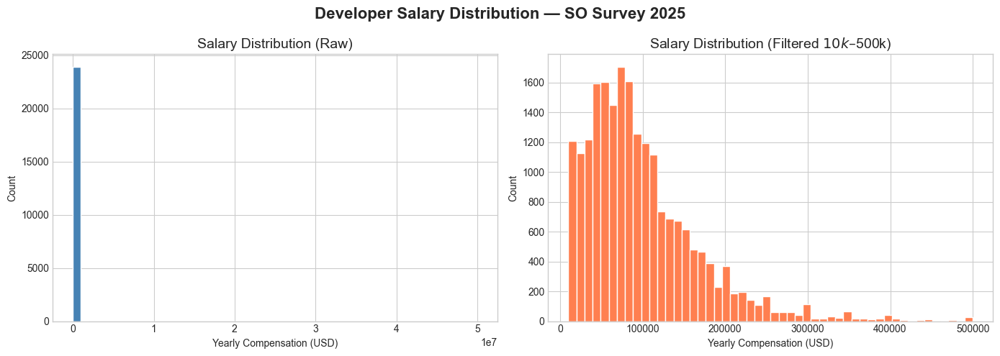
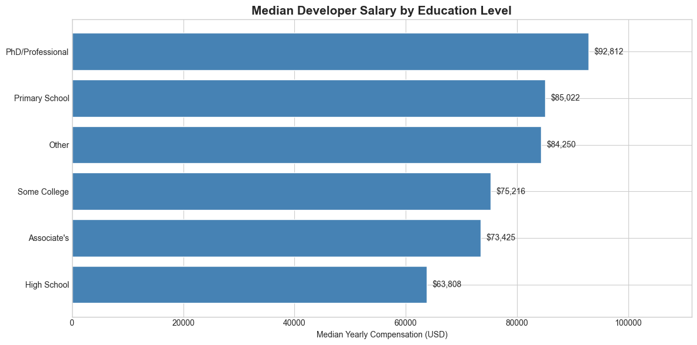
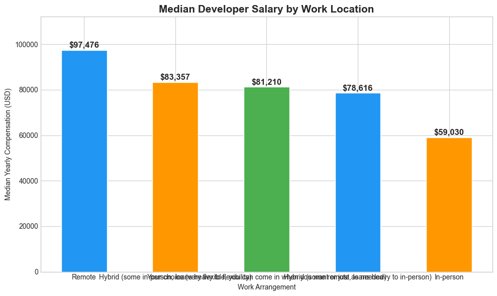
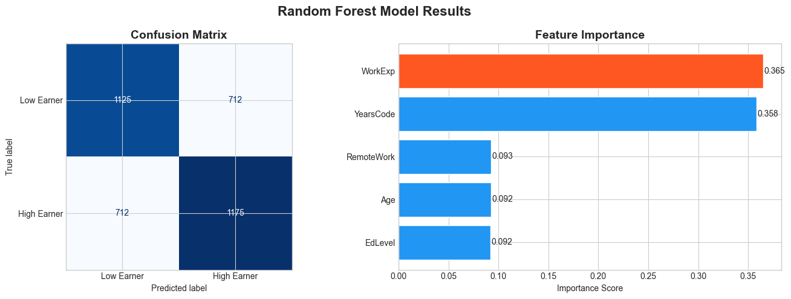

A data-based approach using Stack Overflow's 2025 Annual Developer Survey.
Every year, Stack Overflow asks tens of thousands of developers how much they make. The answers — from 49,191 developers across 177 countries — tell a clear story about what drives a software developer's paycheck. I analyzed the 2025 survey using machine learning to find out what really separates high earners from low earners. Here is what I found.
Developers with 0 to 2 years of experience earn a median salary of $40,586. By 30 or more years of experience, that number nearly triples to $115,720. The steepest climb happens between 5 and 15 years. If you are in your first few years, the data says: hang in there.

Figure 1: Median developer salary by years of professional experience.
PhD and professional degree holders earn the most at $92,812. But developers who only completed primary school earn $85,022 — higher than those with associate degrees or some college. In software development, what you can do often matters more than what credential you hold. Self-taught developers who build strong portfolios can compete at the highest salary levels.

Figure 2: Median developer salary by education level.
Remote developers earn a median of $97,476 compared to just $59,030 for fully in-person workers. That is a $38,446 annual difference. Hybrid arrangements fall somewhere in between, ranging from $78,616 to $83,357 depending on how much flexibility is offered. Every step toward more flexibility in the data correlates with higher pay.

Figure 3: Median developer salary by work arrangement.
I trained a Random Forest model to predict whether a developer earns above or below the median salary of $82,709. The model achieved 62% accuracy — better than random guessing. Work experience and years of coding were the two strongest predictors. To test it, I ran a prediction for a 25 to 34 year old developer with a Bachelor's degree, 4 years of experience, and a fully remote job. The model predicted this developer would be a low earner with 78.4% confidence — consistent with the experience data, which shows that salaries accelerate significantly after 10 or more years.

Figure 4: Confusion matrix and feature importance from the Random Forest model.
Experience is the single biggest driver of developer salary. Remote work comes with a real premium of nearly $38,500 per year. Education helps, but self-taught developers with strong experience can close the gap. The developers earning the most are not necessarily those with the fanciest degrees — they are the ones who kept coding.
So the real question remains: what are you doing to move up the experience curve?